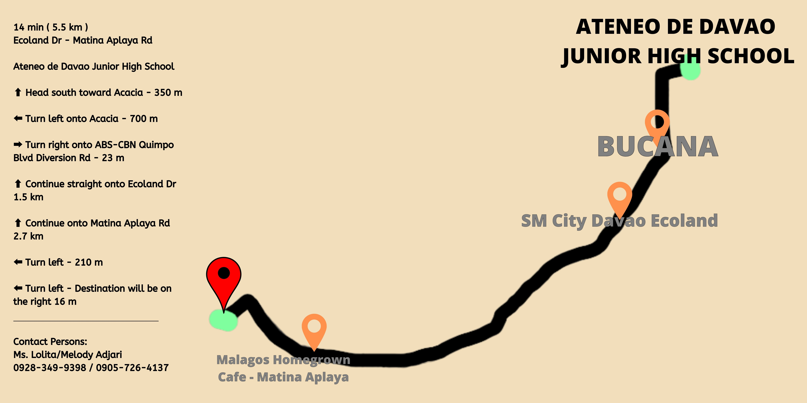
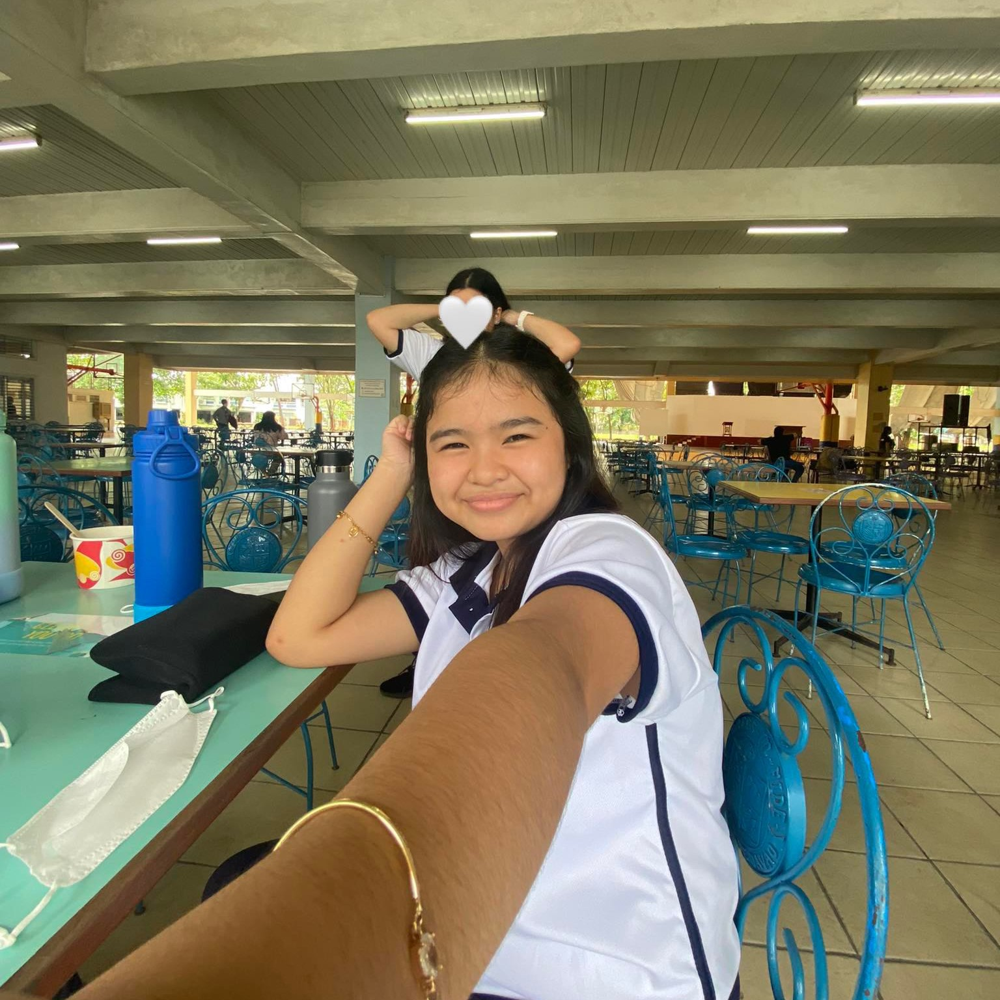

Community Profile

One of our partner organizations is the Bajau Community. The Bajau community is made up of people from Zamboanga
who moved to Davao City as a result of the ongoing violence. Pastor Felicismo "Jun" Morales, a born-again missionary,
donated the land on which they now reside. Finally, the coastline of Matina Aplaya is granted full rights. The institution's
goal is to help the Bajau community in any way it can. The institution provides them with institutional and societal services
such as education, income, and health care.
Project Summary
Our project's main goal is to help the community overcome their problem little by
little. A problem which affects their health, environment, and them in general.
Though this solution or project of ours is little, simple, or easy, we are certain that
it would eventually help them overcome it. We believe that every success starts
in small steps and our project represents the small steps that would lead them to
success. We will teach them how to have or adapt this kind of mindset and
routine. Due to the fact that this project would be a big help maintain cleanliness
in their community.
In our project, we are focusing on their waste related issue/challenge. The challenge that they're facing is all about the waste. Waste that came from the
ocean that eventually clogged out the drains which results in a flood everytime it
rains. It is hard for them due to the fact that it does not only affect their
community but also their body health. If this problem is not taken, sooner, it'll
become harder to solve.
Now, we thought of something useful and easy. Our project will be like a simple
orientation about the environment, cleanliness, and so forth. We will talk about
how important it is to maintain cleanliness, no matter what. We will also give out five (5) cleaning kits for the five comfort rooms. The cleaning kit should contain the following; Multi purpose cleaner (domex/zonrox), Cleaning brush, Reusable gloves, Walis tingting, Dust pans, trash bags, and a laminated mini guide for a cleaner environment.

About the Web Designer

Franchezka Cassandra M. Cua is a leader from Group 2B 9 Bellarmine of the Ateneo de Davao University - Junior High School Unit.
She is passionate about her studies. A natural leader and an ambitious girl. Thus, she is a fast learner and can easily get along with others.
Along with her group, brings joy and aspiration to our Badjao Community. Their group aims to help the community maintain cleanliness and
help kids who are incapable to experience the things they should.